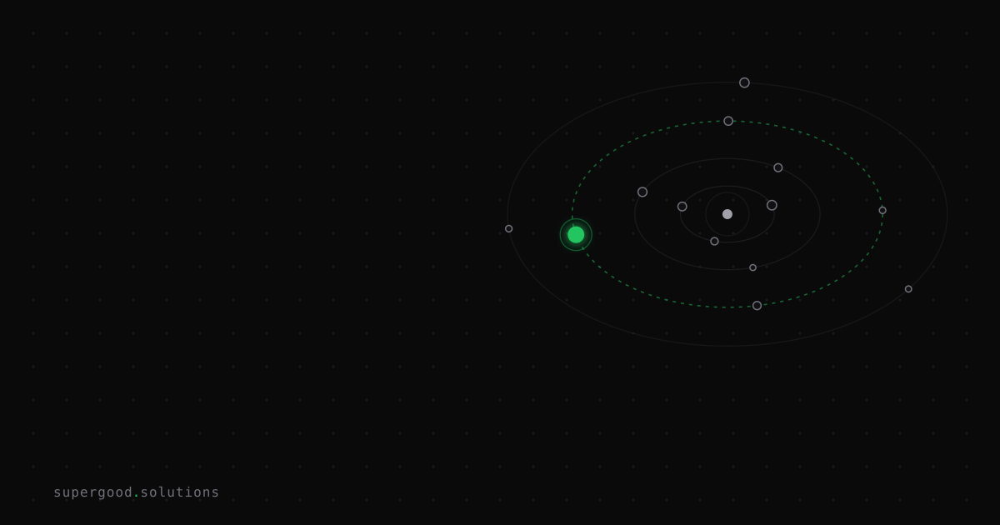

Agent Reproducibility Is the Enterprise Requirement Nobody Is Specifying
TL;DR: Your agent passed the pilot, so you assume it will behave the same way next quarter. It won't, and almost no deployment contract says how much drift is acceptable.
Key Insight
A successful run is one sample, not a guarantee. Ask an LLM the same question twice and you may get different answers, which most teams expect. The less obvious part is that setting temperature to 0 does not fix it.
Thinking Machines Lab tested this by sampling 1000 completions of the same prompt at temperature 0 from a single open model. They got 80 unique completions. The most common one appeared only 78 times. The cause was not mainly GPU race conditions. It was that the server's batch size changes from request to request, which changes the order floating-point numbers get added in, which nudges a token choice, which then compounds across a long generation. When they used batch-invariant kernels, all 1000 completions came out identical.
Now stack an agent on top. An agent run is dozens of model calls, each one conditioning on the last, plus tool results that change with the world. Small divergence early turns into a different plan late. The pilot you approved was one path through that tree.
This is a pro-agent argument. Agents are the right tool. But "it worked" and "it will keep working" are two different claims, and only the first one has evidence behind it.
Why Teams Miss This
Three assumptions carry most of the weight.
- Temperature 0 means deterministic. It means greedy decoding. Across hosted APIs, batching, and provider-side model updates, you still get variance.
- A passing eval is a property of the agent. It is a property of one run, on one day, against one model snapshot.
- Reliability belongs to the vendor. The vendor's SLA covers uptime and latency. Nobody's SLA covers "the same input yields an equivalent output," so the gap falls to you by default.
The result is that contracts specify response time and availability to the decimal, and say nothing about output stability. When something drifts, nobody can say whether that was a regression or ordinary variance, because no one wrote down what ordinary variance was.
How to Actually Do It
Treat reproducibility as a measured number with a threshold, the same way you treat latency.
- Pick a golden set. 30 to 50 real tasks with a clear definition of "equivalent outcome." Equivalent does not mean identical text. It means the same decision, the same tool calls in a compatible order, and the same final state.
- Run each task N times. Ten is a reasonable start. Record the pass rate per task, not just the average.
- Write the number down. For example: "Invoice triage agent reaches the same routing decision on at least 95% of repeated runs, and no task falls below 80%." That is a reproducibility SLO.
- Pin what you can. Model snapshot ID, prompt version, tool schema version, and seed where the provider supports one. Log all four with every run.
- Re-run on every change. A new model version, a prompt edit, or a tool update all count. Compare against the stored baseline distribution, not against a single previous run.
A minimal harness looks like this:
from collections import Counter
def repro_score(agent, task, n=10):
outcomes = [agent.run(task).final_decision for _ in range(n)]
top, count = Counter(outcomes).most_common(1)[0]
return {"task": task.id, "modal": top, "agreement": count / n}
scores = [repro_score(agent, t) for t in golden_set]
worst = min(s["agreement"] for s in scores)
assert worst >= 0.8, f"reproducibility floor breached: {worst:.2f}"If a task has low agreement, that is useful information. It usually means the task is underspecified, the tool output is noisy, or the agent has too many valid paths. Narrowing the allowed actions often fixes it faster than switching models.
For workflows that need bit-exact output, such as audit trails or regulated records, store the output of the first run and replay it. Do not regenerate it and hope.
What We've Learned
Variance is not the enemy. Unmeasured variance is. A team that knows its agent agrees with itself 97% of the time can ship, monitor, and argue about the threshold. A team that has never run the same task twice is guessing.
Next experiment: pick one production agent, run its ten most common tasks ten times each, and put the worst agreement score in the next deployment review. Then add a line to the contract template that asks for a reproducibility target alongside latency and uptime.
Sources
- Thinking Machines Lab, Defeating Nondeterminism in LLM Inference: thinkingmachines.ai/blog/defeating-nondeterminism-in-llm-inference
- Related preprint on non-determinism in LLM outputs: arxiv.org/abs/2506.09501
- OpenAI Cookbook, reproducible outputs with the seed parameter: cookbook.openai.com/examples/reproducible_outputs_with_the_seed_parameter
Have a specific workflow in mind?
Bring it to a Quick Scan — a live working session where we'll tell you honestly whether it should be an agent, a workflow, or left alone, before you spend a dollar building it. You get 3 prioritized recommendations on the call, a one-page summary after, and the $1,000 credited toward a build if you sign within 14 days.
Get new posts + practical agent-ops notes
One email when something new goes up. No nurture sequence, no spam — unsubscribe whenever you want.